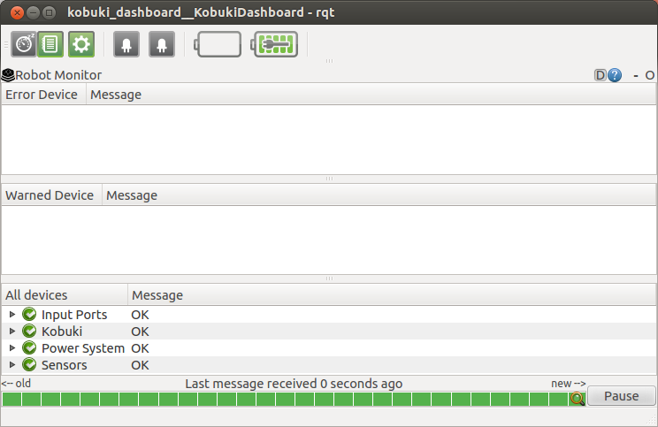

Quick Start
Step 1: Setup network
The TurtleBot is preconfigured to start ROS and all of the minimum required services for basic operation at bootup. The primary requirement for getting your TurtleBot running is that is needs to be connected to a network so that you can operate it remotely. You can use the Network Manager in the upper right corner of your screen to connect to a WiFi, Ethernet or cellular network. Once connected, the startup scripts will autodetect the current network interface and start ROS. Once a network configuration is setup, the laptop can be closed and placed in the TurtleBot.
Step 2: Run Demos
Once the network is setup the robot can run several demos include Teleoperation and People Following. We suggest starting with these demos to gather experimental data on the robot's performance.
Software Notes
Robot Remocon - Android Pairing

The robot remocon is an android application to interface with ROS robots in pairing mode. When the remocon starts, you can initiate connections with ROS robots using one the following mechanisms:
- Manually
- QRCode
- Zeroconf
- Previously saved connection
Once connected, remocon displays a list of the app pairs (robot and android) that you can start/stop remotely. TurtleBot provides the following default apps.
TurtleBot Dashboard
The TurtleBot Dashboard provides a wide range of diagnostic information, including the current battery levels for the robot base and the laptop and the state of the power breakers. This GUI can be run locally on the robot or on a workstation that has been configured to use the TurtleBot as the ROS Master.

Hardware Notes
YujinRobot Kobuki
Kobuki has been designed with continous operation in mind, so the robot is fully operation while charging. Indeed, it can recharge the controlling laptop together wuth the robot, as long as the power cable probided with Turtlebot 2 is plugged.
iRobot Create
Charging : When Turtlebots are charging, their power indicator lights fades on and off, it the light is not fading in and out your robot is not charging. If you have trouble charging the robot, we suggest disconnecting power to the Create, removing the serial connection and turning the Create off before reconnecting the charger. As the indicator light may turn off when the Create is on, we suggest turning the Create back on before turning it off to make sure the Create is actually off.
Kinect Power : The iRobot Create is limited to providing 1.5 Amps at 12 Volts via the power connector. Due to this limitation, the Kinect power output must be disabled for the robot to charge. Otherwise, devices such as a Kinect can discharge the battery faster than it can able to charge which may damage the battery. To prevent this, the power output is disabled in software by default and must be enabled to operate the Kinect. More information can be found here or by looking at the kinect.launch file in the turtlebot_bringup package.
Calibration : iRobot Create based TurtleBots equipped with a gyro can use the turtlebot_calibration package to achieve the best odometry. If your robot has a gyro that is has a maximum yaw rate that is not 250°/sec, you will need to set the gyro_measurement_range parameter in the launch file before attempting calibration. See this ticket or this question on ROS Answers for more information.